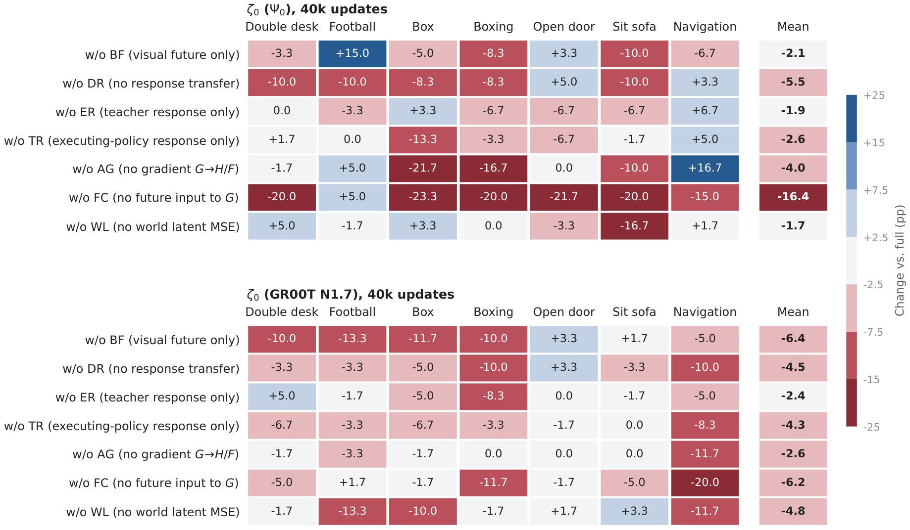
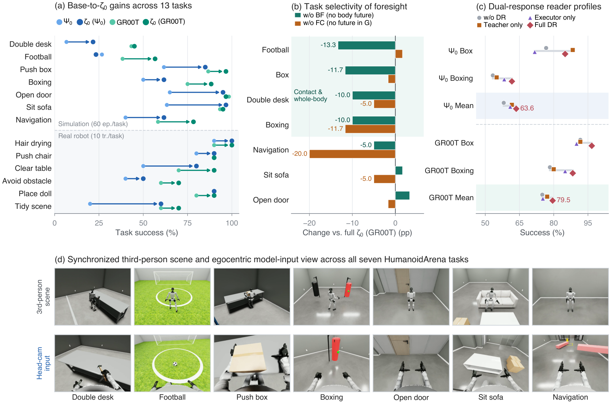
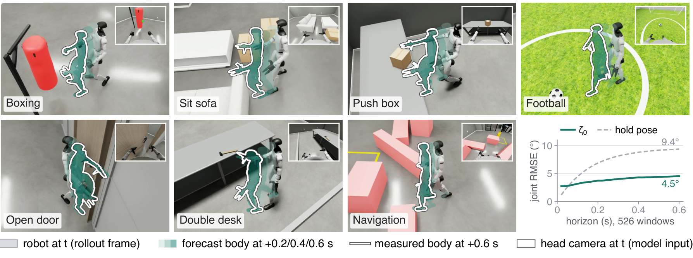
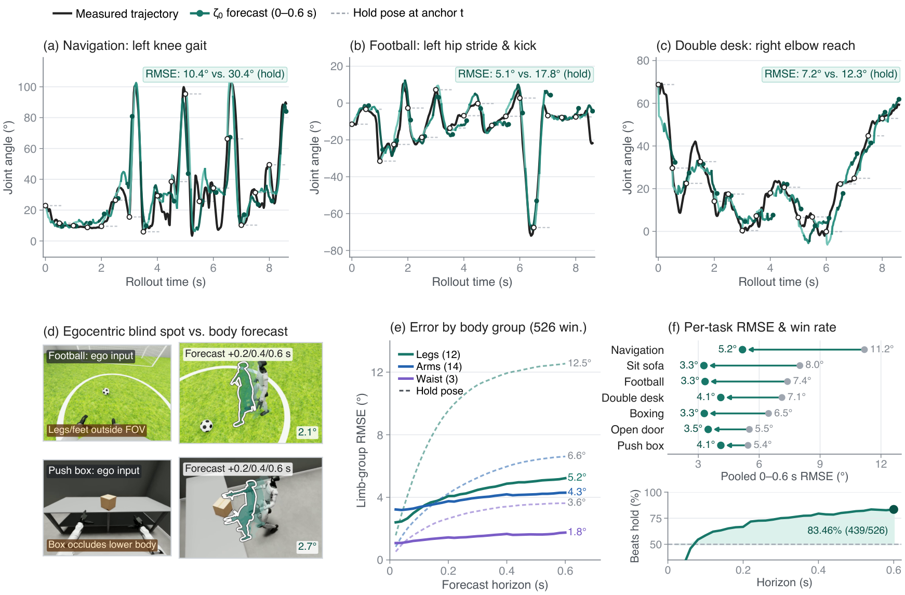

ζ0: A Framework for World Action Models with Joint Scene and Body Foresight in Humanoid Control
 Tongji University
Tongji University

Real-World Whole-Body Demonstrations
All five policies share three RGB cameras (head + dual wrists), 41-D measured state, and the SONIC whole-body controller. Across all six tasks, ζ0 reaches 78.3% on Ψ0 (+16.7 pp) and 85.0% on GR00T N1.7 (+10.0 pp), with the largest gains on multi-stage long-horizon tasks (+26.7 pp on Ψ0; +13.3 pp on GR00T).
Simulation: Synchronized Dual-View Explorer
Inspect why egocentric visual foresight alone falls short: the head camera sees forearms and objects ahead, while the robot’s legs, torso, and foot contact lie outside the field of view. ζ0 jointly forecasts scene dynamics and all 29 body joints from causal inputs.
How ζ0 Works
World Action Models anticipate visual outcomes to guide robot actions, yet humanoid interaction also depends on how the robot’s body responds. Visual foresight alone can miss body motion, while latent-distance losses do not directly supervise action responses. We present ζ0, a framework that turns vision-language-action policies into World Action Models by foreseeing future visual features and measured joint trajectories in a shared latent representation. During training, a teacher conditioned on recorded futures provides a reference action response, and dual-response transfer trains the causal predictor to match it through both the teacher and the executing policy. All components are trained jointly, and deployment uses only causally predicted futures.
 Click to enlarge
Click to enlarge
Shared Scene & Body Future Latent
Encodes future post-merger visual features and 50 Hz measured 29-joint body trajectories (14 arm, 12 leg, 3 waist) into 3 × 8 × 256 tokens spanning +0.2, +0.4, and +0.6 s. Captures real contact and balance rather than commanded actions alone.
Dual-Response Transfer in Action Space
Equal latent-distance errors can induce vastly different actions. A privileged recorded-future teacher T provides a reference flow velocity vref; matching it through both locked Tfix and deployed Gfix aligns predicted foresight directly with control.
Base-Agnostic & Lightweight Deployment
Attaches cleanly to distinct VLA architectures—an 8-layer flow head (Ψ0) and a 32-layer DiT cross-attention head (GR00T N1.7). At inference, E, EMA, D, and T drop away; F runs once per action chunk (212 ms on one RTX 4090).
Benchmarks, Ablations & Body Foresight
| Policy | Double desk | Football | Box | Boxing | Open door | Sit sofa | Navigation | Mean (%) |
|---|
Published rows retain source-specific settings (‡ average over base + 3 OOD modes; * additional policy pretraining). Our runs (bottom six rows) share 700 demonstrations, 40,000 updates, SONIC low-level control, and 60 episodes/task across scenario seeds 0, 1, 2.
| Policy | Hair drying | Push chair | Clear table | Avoid obst. | Place doll | Tidy scene | Mean (%) |
|---|
Success counts out of 10 randomized physical trials per task (60 trials per policy; 300 total). All five policies train separately per task on identical demonstrations for 20,000 updates.

Click to enlarge
Click to enlarge
Click to enlarge
Click to enlargeBibTeX
@article{chen2026zeta0,
title = {$\zeta_0$: A Framework for World Action Models with Joint Scene and Body Foresight in Humanoid Control},
author = {Chen, Yizhi and Cao, Zhanxiang and Wang, Yitong and Liu, Junyu and Zeng, Hongchu and Peng, Xinyi and Huang, Chuxuan and Su, Yicheng and Zhou, Zihao and Fu, Shengcheng and Li, Haoyang and Yan, Liyun and Zhan, Tianyue and Ma, Jianming and Zhang, Yang and Zhu, Keqi and Si, Xiaxi and Yao, Jinming and Sun, Qiao and Zhang, Shizeng and Zhong, Jiangwei and Gao, Yue},
journal = {arXiv preprint},
year = {2026}
}